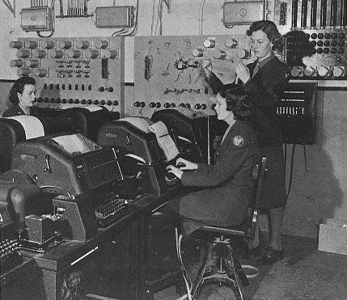
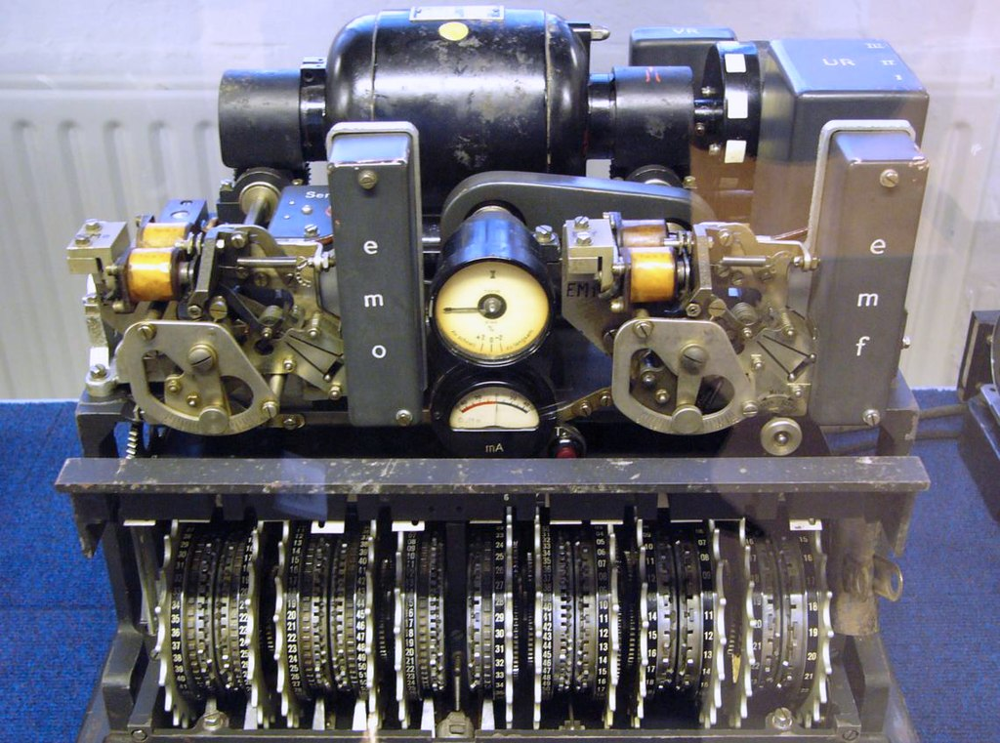
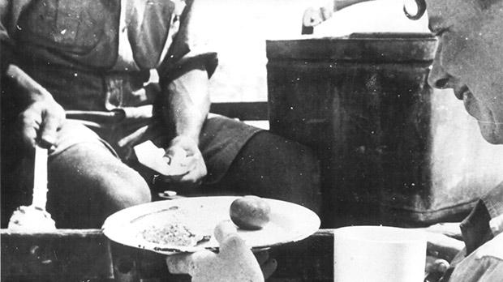
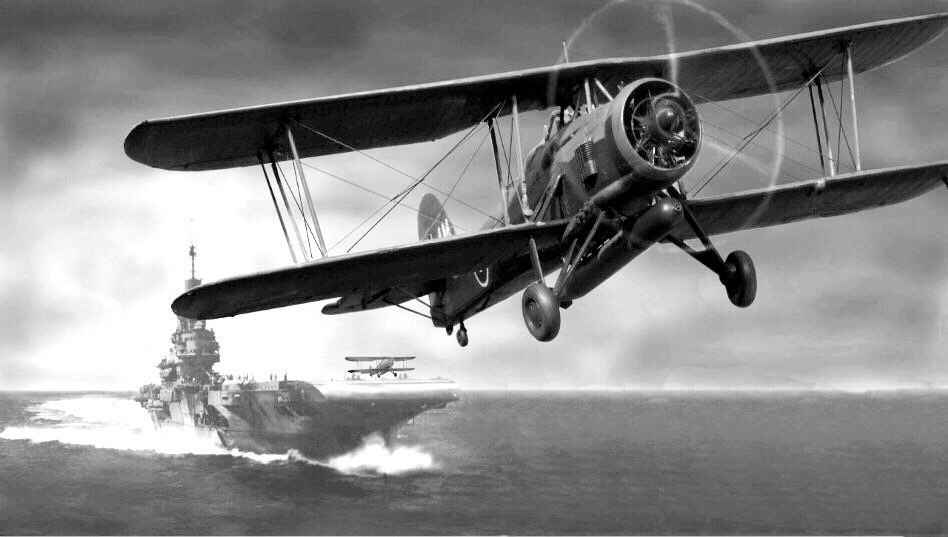
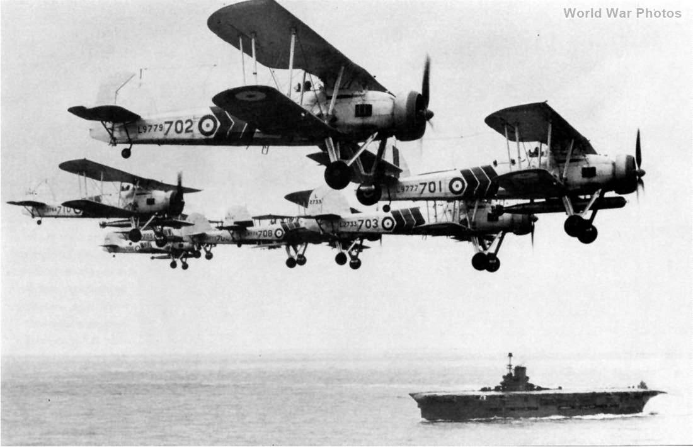
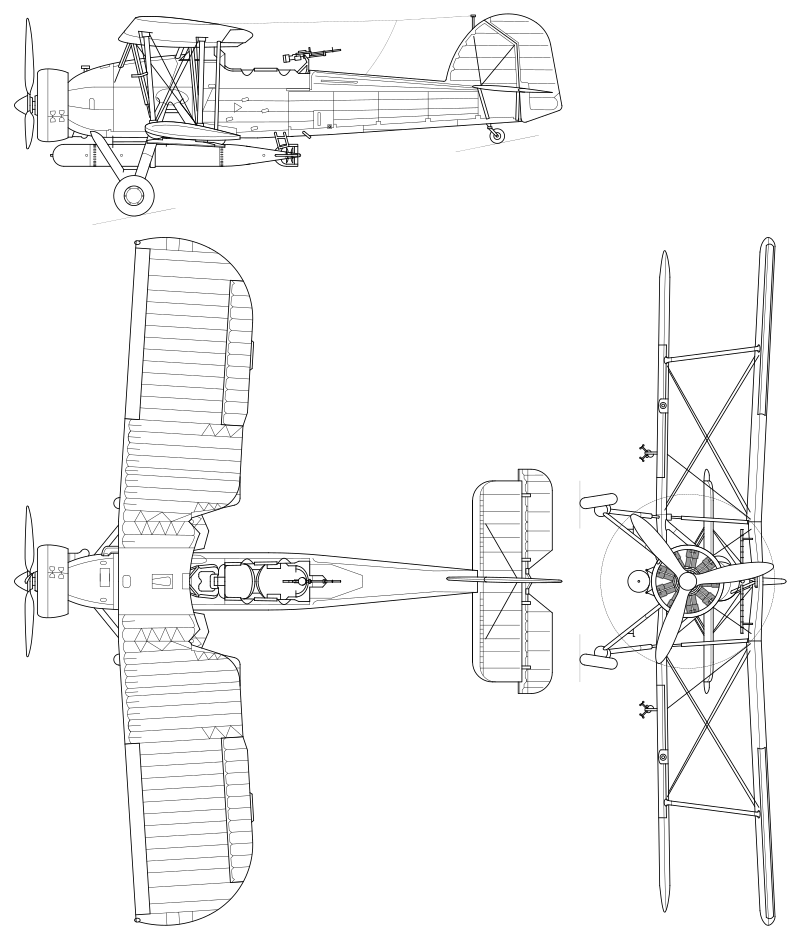

WW2 중 항모에서의 야간 작전 (20) - 연료 절약
게시: 2025-07-03T06:30:27+09:00
<실시간 감시는 어떻게?> 타란토 공습의 성공을 위해서는 정확한 실시간 표적 확인이 매우 중요. 그런데 타란토 항구에 대한 사진 촬영은 로열네이비가 아니라 말타섬의 로열에어포스 소속 Martin Maryland가 수행했다고 하지 않았나? Maryland 정찰기들은 당연히 사진을 찍고 나서 말타섬으로 되돌아갈 텐데, 그 사진을 지중해상의 항모 HMS Illustrious에서는 어떻게 받아 보았을까? 당시 가장 빠른 정보 전달 방식은 무전에 의한 음성, 무전에 의한 모르스 부호, 그리고 유선 텔레타이프(teletyep), 무선 텔레타이프(radioteletype) 등이 있었으나, 이들은 모두 음성과 텍스트로만 정보 전달이 가능.

(WW2 중 영국군의 teletypist들의 모습)

(텔레타이프로 오가는 정보도 도청이 가능했을까? 당근 가능. 따라서 독일군의 경우는 암호화 장치를 텔레타이프와 연동시켜 운용. 사진은 독일군의 Lorenz S42 암호화 장비.) 말타섬과 알렉산드리아 항구를 오가는 우편 항공기를 이용하여 며칠 전 사진이야 잘 받아볼 수 있었으나, 공습 당일인 11월 11일 아침에 찍은 사진을 동부 지중해를 항해 중인 HMS Illustrious에게 어떻게 전달했을까? 그냥 간단. 일러스트리어스에서 전날 Swordfish 한 대를 말타에 날려보내 대기시키다가 매릴랜드 정찰기가 찍어온 사진이 인화되자마자 그걸 들고 일러스트리어스로 돌아왔음. 돌아올 때 (이왕 육지에 닿은 김에) 신선한 식품도 약간 가져왔는데... 고작 감자 한 자루였다고. 당시 말타섬도 지브랄타를 통해 어렵게 보급을 받고 있는 중이라 먹을 것 사정이 좋지 않았던 것.

(말타섬은 WW2 중반기까지 이탈리아와 독일의 엄중한 봉쇄 작전하에 있었으므로 갈수록 식량난에 시달림. 타란토 습격 이후인 1941년~42년에는 매우 사정이 좋지 않아져 기아에 의한 항복을 고려할 상황까지 몰림. 특히 주민들은 군당국의 배급에 의존해야 했는데 거리에서는 군인들이 불심검문을 하여 배급에 의한 것이 아닌, 암시장에서 구입한 식량이 발견되면 그냥 압수하기도. 사진은 당시 말타섬 주둔 병사들의 배식.) <드디어 날다> 11월 11일, 최종적인 점검을 마친 일러스트리어스는 순양함 4척과 구축함 4척의 호위를 받으며 타란토로 항진. 예정대로 타란토에서 170 해리 (315km) 떨어진 지점에 저녁 8시에 도착. 현장에 도착해서 보니 풍속은 2노트. 어뢰를 장착한 소드피쉬가 사출기(catapult)의 사용 없이 이함하기 위해서는 30노트의 맞바람이 필요했으므로 그에 따라 바람 방향으로 침로를 바꿔 28노트의 속도로 항진. 사출기를 쓰지 않으므로 연속적으로 지체 없이 12대의 소드피쉬들을 날려보내는 것이 목표. 그러나 최소한 앞에서 먼저 이함한 소드피쉬의 프로펠러 바람(prop wash)이 흩어질 때까지는 기다려야 했으므로 이론적으로 계산한 소드피쉬의 출격 속도는 10초당 1대씩. 물론 원하는 대로 그림처럼 흘러가지는 않았고, 그러다보니 12대의 소드피쉬들을 다 날려보내고 나니 시간은 벌써 저녁 8시40분.

이 12대의 소드피쉬들이 8시40분에 곧장 타란토로의 비행을 시작했는가 하면 그건 또 아님. 이들은 타란토까지 날아가기 전에 편대를 이루어야 했는데, 그걸 어둠 속에서 하는 것은 쉬운 일이 아님. 먼저 이함한 소드피쉬들이 일러스트리어스에서 약 12~13km 떨어진 상공에서 크게 원을 그리며 하나둘씩 합류한 뒤 V자 대형의 편대를 이룬 뒤 타란토로 기수를 돌릴 때까지 추가로 17분이 걸렸음. 물론 이때까지는 비행등(formation light)을 켠 상태.

(기록을 읽어보면 대충 3대씩의 편대(sub-flight)를 이루되 전체적으로 V자 형태를 이루도록 한 듯. 사진은 HMS Ark Royal을 배경으로 편대 비행 중인 소드피쉬들.)
이제 타란토 상공에 도달할 때까지의 남은 시간은? 약 2시간 20분. 아니, 315km 떨어진 곳까지 날아가는데 뭐 그렇게 오래 걸려? 어뢰를 매단 소드피쉬가 연료를 아껴가며 비행하는 순항속도는 생각보다 느려서 고작 120km/h. 야간에 경부 고속도로를 달리는 자동차들 속도. 연료 절약을 위한 경제 속도는 그렇다치고, 고도는 어땠을까? <경제 고도> 고도에 따른 프로펠러 전투기의 연료 효율은 2가지 측면을 고려해야 함. 즉, 고도가 높을 수록 공기 밀도가 적어서... 1) 고고도에서 항력(drag)이 적으므로 연료 효율에 유리 2) 고고도에서 산소가 희박하므로 연료 효율에 불리 이 두 가지 요소를 고려하고, 또 WW2 당시 대부분의 전투기들이 갖추고 있던 과급기(supercharger, 공기흡입구로 빨아들인 공기를 엔진 연소실로 보내기 전에 압축해주는 장치)의 효율을 생각할 때, Spitfire나 Mustang 같은 전투기들의 경제 고도는 대개 약 4~5km. 스핏파이어의 최대 고도가 약 11km 정도이니, 결국 딱 중간 고도가 경제 고도인 셈.
(과급기의 기본적인 얼개)
그러나 저건 적 폭격기 및 전투기와 싸우기 위해 만들어진 고성능 전투기의 경우이고, 짧은 비행갑판에서 무거운 무장을 달고 날아오르는 것에 초점을 맞춘 복엽기인 Fairey Swordfish에게는 그 특성에 따른 별도의 경제 고도가 있었음. 어차피 소드피쉬는 최대 상승고도가 4km 정도였으므로 대략 그 중간인 1.8km가 경제 고도였고, 실제로 일러스트리어스에서 타란토로 향하던 소드피쉬들은 딱 그 고도에서 편대를 짓고 날아갔음.

그러나 그 고도로 날다보니 단점이 있음. 하필 그날 밤엔 그 해역엔 딱 그 높이에 층운이 깔려 있어 편대를 유지하기가 어려웠던 것. 가면 갈수록 구름 속에서 일부 소드피쉬들이 편대에서 이탈하는 일이 벌어짐. 아래는 당시 비행했던 조종사 M. Maund 대위의 수기. "우리는 이제 층운 아래로 들어섰다. 달빛을 담요처럼 가린 이 구름층은, 군데군데 열린 틈 사이로만 은빛의 달빛을 보여주었다. 그런데 이럴 수가, Williamson이 그 속을 뚫고 올라가려는 거다! 거친 구름 가장자리에 다다르자 내 왼쪽 날개를 뭔가가 잡아당기는 듯한 느낌을 받았다. 이제 보니, 내 옆에서 날던 Kemp가 나를 슬쩍슬쩍 밀어낸 결과 내가 선두 편대(sub-flight)의 와류 속으로 들어가 버린 것이다. 나는 조종간을 오른쪽으로 세게 밀어 날개가 처지지 않게 버텼지만, 그 선두 편대도 난기류를 만난 상태였고, 갑자기 내 날개와 기수가 툭 떨어지며 우리는 하늘에서 미끄러지듯 추락하기 시작했다. 나는 조종간을 놔버려 기체가 스스로 자세를 잡게 했는데, 그렇게 떨어지는 도중에 바로 머리 위로 가까이 스쳐 지나가는 다른 기체의 실루엣이 보였다. 선회하니 전방에 있는 비행등 불빛이 보이길래 그들을 따라 고도를 높였고, 이런 구름층에서 드물게 존재하는 구멍을 통해 그들을 쫓아갔다. 선명하게 두 대의 기체가 보였는데, 옆으로 붙어 달빛 아래서 보니 기체에 “5A”라는 번호가 보였다. 그건 Olly의 기체였다. 다른 녀석들은 앞서간 모양이었다. 초조하게 몇 분 비행하다 보니 구름 윗부분의 불룩한 언덕들 사이로 희미한 불빛 몇 개가 나타났다. 나는 스로틀(throttle)을 열고 속도를 내어 Olly 곁을 떠나 그 불빛들을 뒤쫓기 시작했다. 불쌍한 내 엔진은 오늘 밤 제대로 그을릴 것 같다."